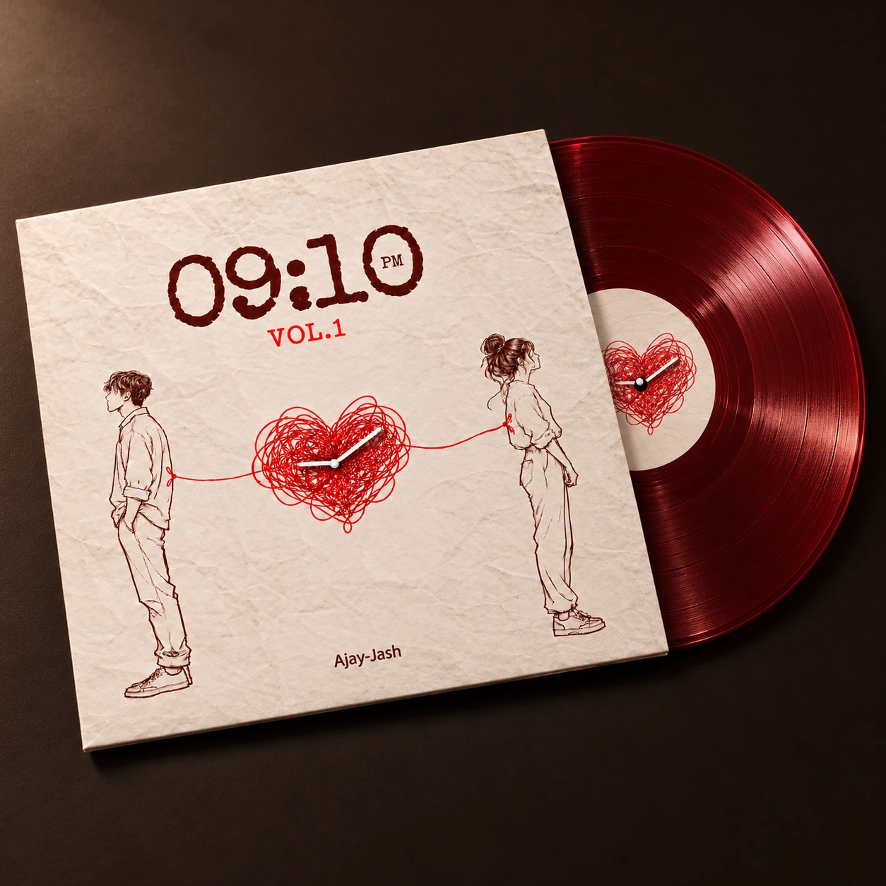
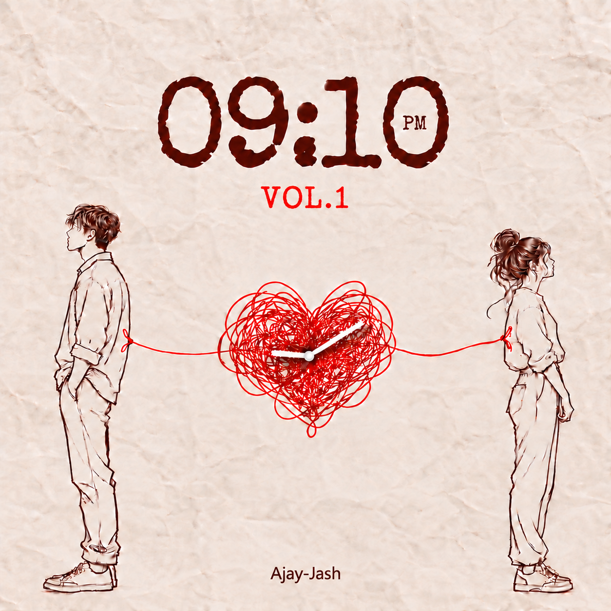
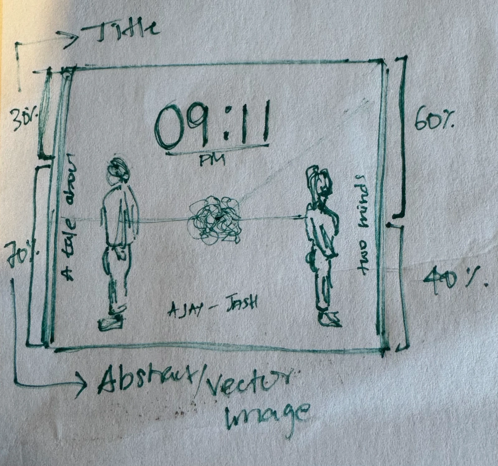

Back to projectsAlbum artwork
A fictional romantic album
09:10pm.
A song written with a friend became a visual exploration of love, distance, and memory.

The concept
Love, distance,
and memory.
09:10pm is a fictional romantic album-cover project developed from a song written with a friend.
The design uses outlined characters, a tangled heart-shaped string, clock hands showing 9:10, a crushed-paper texture, and restrained typography to communicate love, distance, and memory.
The process
From a sketch
to a shared story.
The early composition study establishes the two figures, the connecting thread, and space for the title. Slide between the sketch and final cover to see how the composition developed.


Keep exploring.
Back to projects